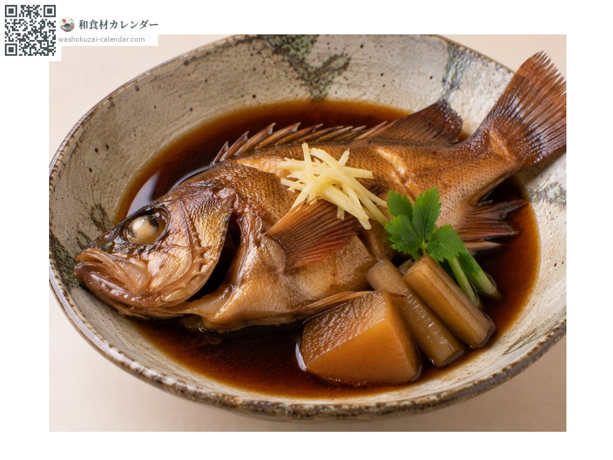
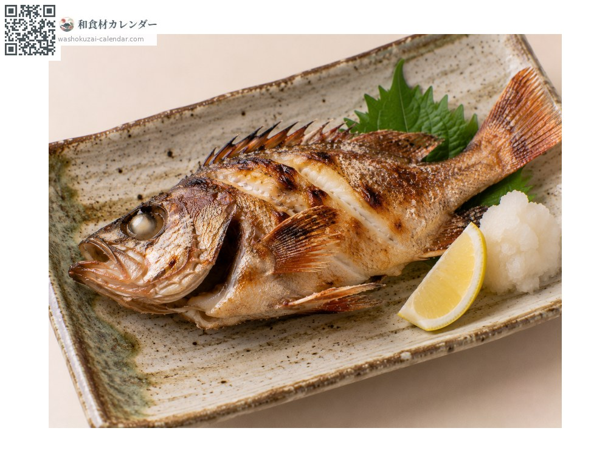
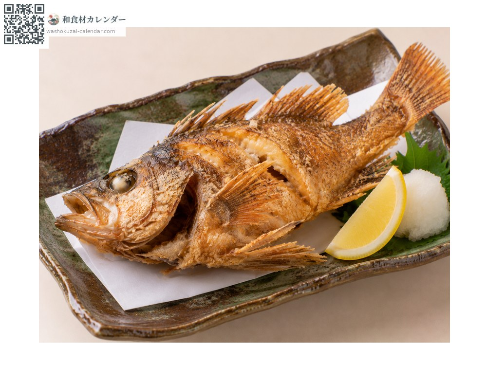
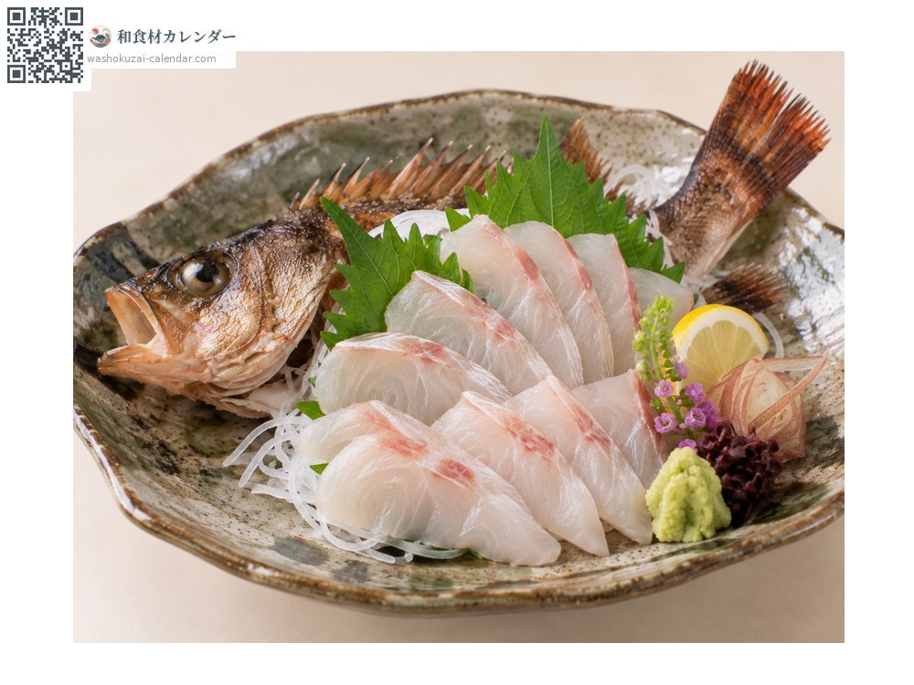

海鮮
日本平鮋（目張）
メバル めばる mebaru
別名mebaru
當令時期為4月、5月、6月

當令時期
1月
2月
3月
4月
5月
6月
7月
8月
9月
10月
11月
12月
當令有供應
料理方式

甜醬油燉煮
最經典的做法。甜鹹燉到魚肉輕輕鬆開。

鹽烤
小尾的整條燒烤。魚皮那面焦香。

日式炸物
炸到連骨頭都能吃。炸兩次會更酥香。

生魚片
夠新鮮可生食。是清淡高雅的白肉。
挑選方式
眼睛大而清澈。體色鮮豔，魚鰓呈紅色。
保存方式
取出內臟後冷藏。兩天內用完。
主要產地
小知識
分為黑目張、赤目張、白目張三種，以體色區分。因為在年初就出現，也被稱為「報春魚」。